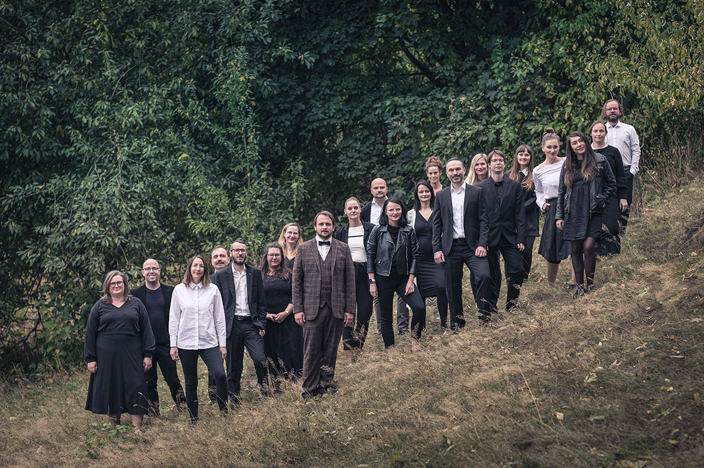

Jsme amatérský smíšený pěvecký sbor. Zpíváme díla českých autorů z přelomu 19. a 20. století. Jsme z Brna a fungujeme od roku 2019.
Jsme amatérský smíšený pěvecký sbor. Zpíváme díla českých autorů z přelomu 19. a 20. století. Jsme z Brna a fungujeme od roku 2019.
Jáchym Hájek je spoluzakládajícím členem a sbormistrem brněnského pěveckého sboru Na hłas. Jeho činnost je specifická v houževnaté, důkladné a laskavé práci s amatérskými pěvci, při které staví na roveň kvalitním pěveckým výkonům i přátelskou atmosféru v kolektivu. Dále působí jako trumpetista skupiny Poletíme? a jako zpěvák skupiny Tingltangl. Pochází z hudebnické rodiny, jeho otec je populární evangelický farář a undergroundový hudebník Štěpán Hájek.
Pěvecký sbor Na hlas z. s.
IČO 19957939
Kamínky 287/15
634 00 Brno
Předsedkyně spolku: Iva Klúčovská
✉ i.klucovska@seznam.cz
Bankovní spojení spolku:
2802758699/2010
Budeme rádi za podporu formou finančního daru!